东城3150名卫生健康工作者，昨夜无眠……
来源：北京东城
今日零时，北京市医耗联动综合改革正式实施。此次改革是北京市2017年实施医药分开综合改革、全面取消药品加成之后，进一步深化医药卫生体制改革的重要探索。
今天早8点，东城区各医疗机构迎来了改革后的首个就诊日，各医疗机构信息系统运行顺畅，医疗秩序平稳有序。
据了解，东城区参加改革机构共242家，其中公立机构223家，社会办机构19家。医保定点机构117家，非医保定点机构125家。归东城区管理的医疗机构234家，具有信息系统单位共计110家。
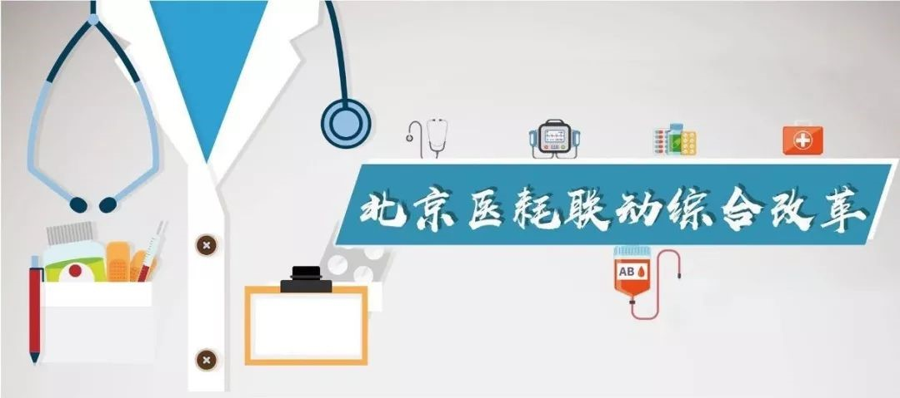为保证改革平稳顺利实施，东城区深化医药卫生体制改革领导小组办公室制定了《东城区医耗联动综合改革实施方案》，建立了高效顺畅的组织管理机制、会商推进机制、信息报送机制、督导检查机制和风险防范机制。
各医疗机构积极开展全员培训、信息系统改造、医疗价格维护工作，积极落实改善医疗服务行动、推进国家药品带量采购和医用耗材集中采购，努力提升患者就医获得感，为医耗联动综合改革政策落实奠定了扎实的工作基础。
3150名卫生健康工作者昨夜无眠
为确保医耗联动综合改革信息系统顺利切换，6月14日晚至15日零时，全区组建12个专业组，对涉改的重点医疗机构开展全方位督导。
全区参改医疗机构广大医务工作者坚守岗位，利用短暂的时间窗口期，全面实施6621项医疗服务价格的调整。
你，忘我工作的样子很帅
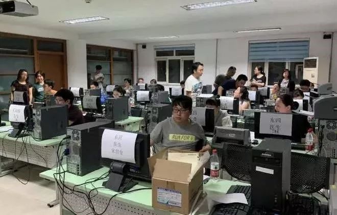 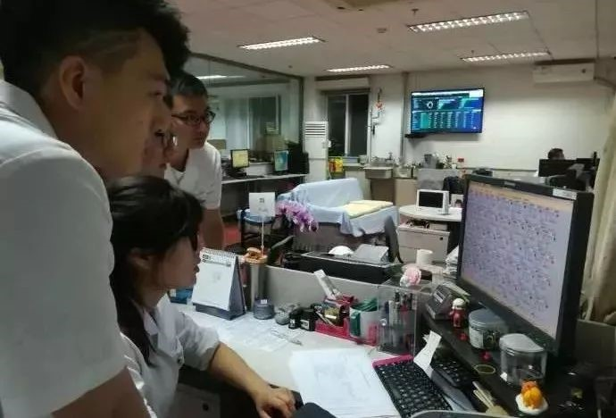人们称你为“白衣天使”，因为“敬佑生命、救死扶伤、甘于奉献、大爱无疆”职业精神融入了你的血脉。
你，专注的神情真美！
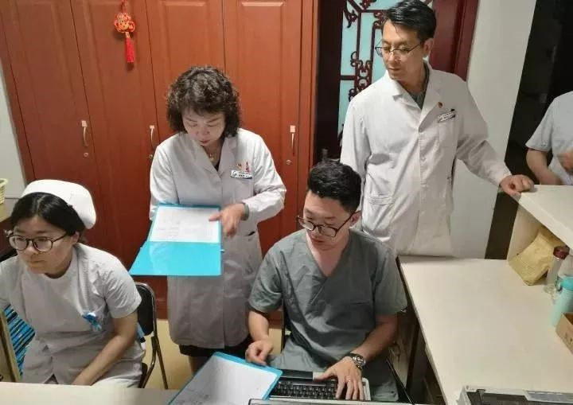 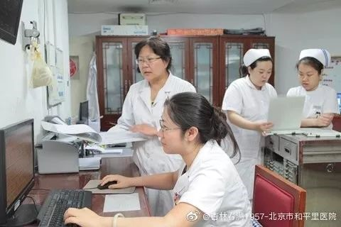 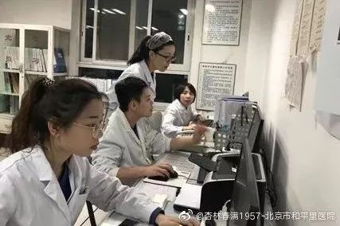人们又称你为“白衣战士”，因为，面对重大疫情、重大自然灾害，你总是临危不惧、勇往直前、舍己救人，义无反顾。
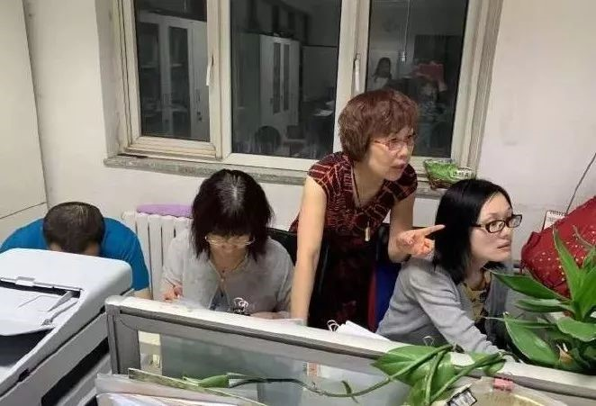 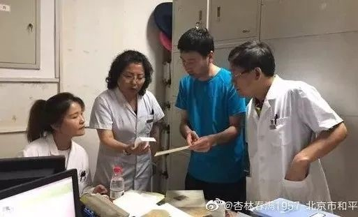 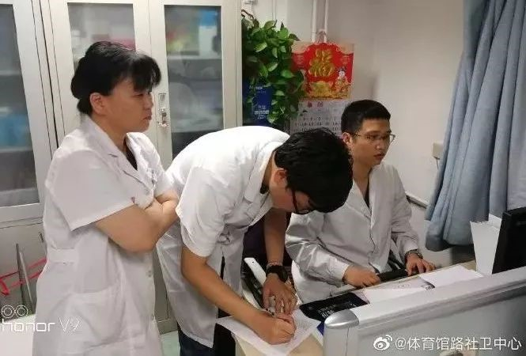职业精神为里
无畏气质为表
“内圣外王”正是你们的“范儿”！
因为有你，咱东城敢说——
“健康东城”不是吹的！
人均预期寿命84.31岁
国际公认三大国民健康指标
东城国内居首
已步入世界发达国家行列
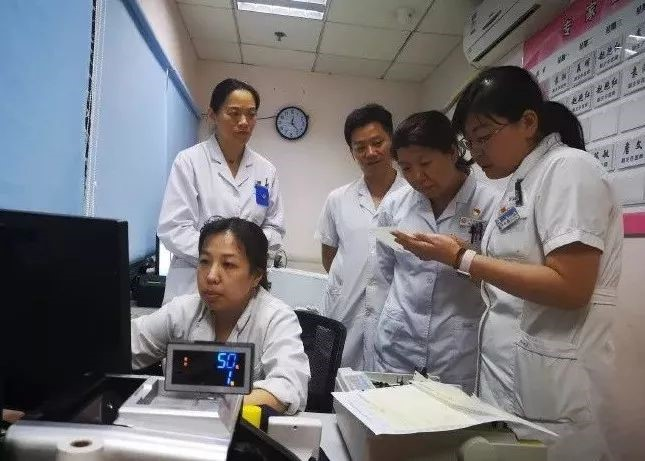东城卫生健康系统也不是盖的！
公共卫生、基层医疗卫生
绩效考核全市第一
医联体数量最多，独占全市六分之一
中医药改革、医养结合、卫生城区
都是国家级示范
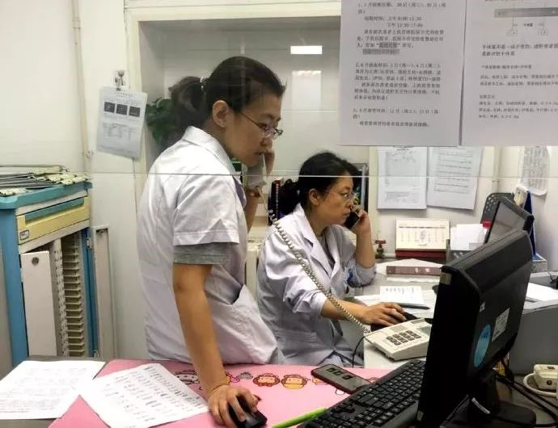健康所系 悠悠民生
生命相托 健康最大
你们深知责任重大
你们深知使命光荣
东城医务工作者想说——
但愿世上人莫病，宁可架上药生尘
常将人病当己病，想着病人开处方
前年
推进医药分开综合改革成效卓著
如今
取消耗材加成，“医改”再出发
服务更周到，百姓得实惠
医生价值被认可
都说“医改”政策好
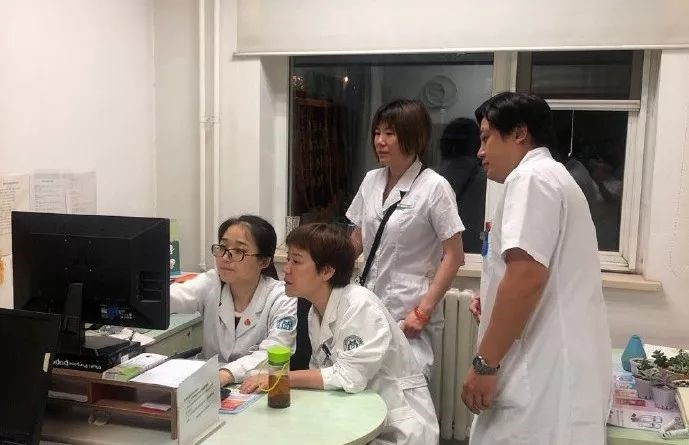既然政策这么好
“医患”更要携手向前跑
为百姓服务，让患者放心
东城医务工作者向您郑重承诺：
“您既性命相托，我定全力以赴
您给我一份信任，我还您一身健康。”